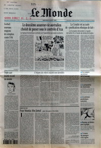

|  |
Les fac�ties d'un objet volant non identifi� (ovni) auraient profondément perturb� le trafic de l'aéroport de San Carlos de Bariloche, une station de sports d'hiver située sur les premiers contreforts de la
cordill�re des Andes, à 1800 km au sud-ouest de Buenos Aires. Le Phénomène, qui a dur� une quinzaine de minutes dans
la nuit du au , a été observ� et décrit avec pr�cision par une dizaine de témoins, dont
Jorge Polanco, pilote de la compagnie Aerolinas Argentinas, qui s'apprétait à atterrir. J'ai soudain vu, en face,
une lumi�re blanche qui venait directement sur nous à toute vitesse et s'est arrêt�e d'un coup à 100 m
environ, explique ce dernier. L'objet, de la taille d'un avion de ligne, a fait ensuite un tour bizarre pour
accompagner notre virage de descente et rester en parall�le à une centaine de mêtres. Alors que j'amor�ais ma
dernière approche, les lumi�res de la piste et de l'aéroport se sont �teintes et j'ai d� remonter de 3 miles,
toujours accompagn� par l'ovni. Quand la lumi�re est revenue au sol et que j'ai recommencé ma descente, il s'est
�loign� à grande vitesse
. Selon Jorge Polance, cet engin ne se déplaçait pas selon les lois physiques
connues
.
Certes, les ovnis se manifestent de préférence l'�t�, une période où l'actualit� laisse plus de place à la
description de leurs apparitions. Le plus souvent, une simple vérification montre qu'il s'agit de ballons
stratosph�riques, de Phénomènes atmosphèriques comme les nuages lenticulaires ou tourbillonnaires, de l'entr�e
dans
l'atmosphère d'une m�t�orite ou d'un d�bris de satellite ou de fus�e.
Depuis quelques années, les confusions les plus fr�quentes ont pour origine les systèmes lumineux à faisceaux multiples dont se sont dot�es certaines discoth�ques. Ils projettent sur les nuages des taches lumineuses visibles parfois à 10 km à la ronde, souligne Jean-Jacques Velasco, responsable du Service d'expertise des Phénomènes de rentr�e atmosphèrique (Sepra) au Centre national d'études spatiales (CNES).
Environ 80 % des Phénomènes bizarres soumis au Sepra sont interpr�tables
d'une manière ou d'une autre, assure-t-il. Mais desévénements sont, en revanche, très difficiles à expliquer. C'est le
cas de ceux d'Argentine, que l'expert du CNES affirme prendre très au
sérieux
. En effet, explique-t-il, au moins 3 autres observations très similaires, encore inexpliqu�es, ont �t�
faites dans le passé.
D'après les archives du Sepra, le plus spectaculaire a eu lieu le 19 septembre 1976 à T�h�ran. Le même type de Phénomène lumineux a été observ� du sol et 2 avions de chasse ont tent� de l'intercepter, avec ordre de tirer. Ils n'ont pu mettre à feu leurs missiles car leurs instruments de bord ont été neutralis�s, un peu comme le système d'�clairage de l'aérodrome argentin.
Le , un pilote de la base a�rienne de Luxeuil, Haute-Sa�ne, a
connu la frayeur de sa vie en voyant une boule de lumi�re verte
monter à la verticale pour se porter à sa
hauteur, puis virer à 90 à et foncer droit sur son Mirage, qu'elle a �vit� au dernier moment.
A chaque fois, souligne Jean-Jacques Velasco, on pouvait avoir l'impression d'un Phénomène intelligent,
r�agissant par rapport à l'avion, qui semblait venir à sa rencontre et évoluer avec lui
. Il n'en tire pour autant
aucune conclusion. Phénomène naturel encore inconnu, canular
"high-tech", expérimentations secr�tes d'engins ou... autre chose ? Il n'existe malheureusement pas de structure
internationale pour prendre en compte et analyser ce genre d'événement
, regrette l'expert du CNES. La question ne sera donc probablement pas tranch�e "scientifiquement"
avant longtemps, laissant place à l'imagination fertile des amateurs d'"autres mondes".